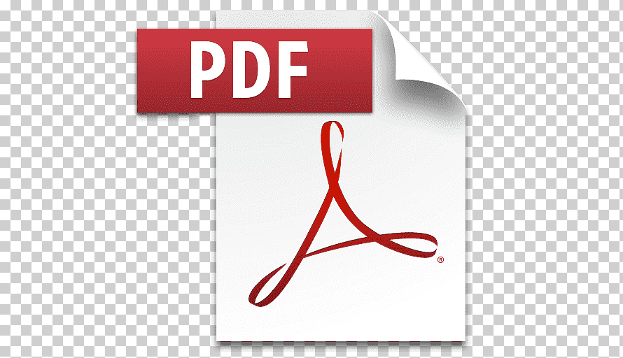

предоставляющих текст, с разметкой или без. Расширенияе Doc часто использовалось для
обозначения простых текстовых файлов без формирования,однако позже стало
использоваться для двоичных форматов с разметкой.
Документ MS Word
.Doc или .doc (от англ.  document )
- расширение имени файла, используемое для файлов,
document )
- расширение имени файла, используемое для файлов,
предоставляющих текст, с разметкой или без. Расширенияе
Doc часто использовалось для
обозначения простых текстовых файлов без формирования,однако позже стало
использоваться для двоичных форматов с разметкой.
Документ MS Word
Portable Document Format ( PDFdocument )-межплатформенный формат электронных документов,
PDFdocument )-межплатформенный формат электронных документов,
разработанной фирмой Adope Sysrems с использованием ряда возможностей языка
Postscript.
Документ PDF
ZIP - популярный формат для сжатия данных и архивации файлов. Файл в этом формате
обычно имеет расширение  zip и хранит в сжатом или не сжатом виде один или несколько
zip и хранит в сжатом или не сжатом виде один или несколько
файлов, которые можно из него извлечь путем распаковки с помощью специальной
программы.
Архив